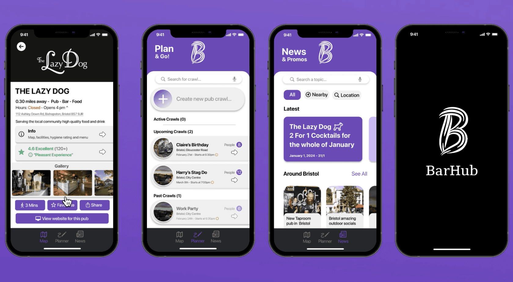
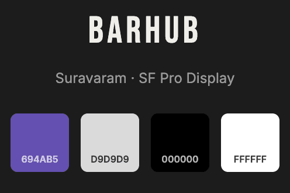

BarHub
An app connecting people with local pubs through personalised recommendations and pub crawl planning.

The problem
Local pubs and bars face intense pressure from larger national chains with greater marketing budgets and brand recognition. Smaller establishments struggle to reach new customers, often relying on word-of-mouth while potential visitors default to familiar or well-advertised venues.
For people going out, discovery was just as broken: it was frustratingly fragmented, relying on generic tools like Google Maps that lack any niche focus, personalised recommendations, or the social, planning dimension central to going out in groups.
Research
- Competitive analysis: a SWOT of Google Maps and Pub Finder
- Surveyed 30 users, revealing weekly pub visits driven by atmosphere and pricing
- Three user personas, each with a mapped journey
The solution
A no-login, map-first iOS app designed to get people out the door fast: personalised recommendations, rich venue profiles, and an integrated pub crawl planner for organising a night across multiple stops. I took it beyond prototypes, building a fully functional app in Xcode and SwiftUI from Figma designs.
Going out is social and spontaneous. The app had to feel the same: no sign-up wall, just a map and a plan.
